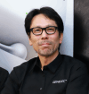
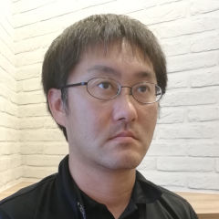

2019.07.08（月）13:00-17:00
東京大学 I-REF棟 6F ヒロビー
| 13:00 - 13:10 | 開会挨拶 | 江崎 浩 | |
| 13:10 - 13:40 | 教師無し学習に基づく自律的な音メディア信号処理とその応用 | 猿渡 洋 | |
| 13:30 - 13:50 | Software Defined Media：視聴空間サービスのソフトウェア制御 | 塚田 学 | |
| 13:50 - 14:20 | Software Defined Sound Field：「SURROUND:AI」と「AFC – Active Field Control」 | 池田雅弘 | |
| 14:20 - 14:50 | Sonic Surf VR: 音のVRを実現する波面合成技術とコンテンツクリエーションについて | 光藤 祐基 | |
| 14:50 - 15:10 | 高品位なイマーシブオーディオ再生環境について（スピーカーアラインメント技術） |  | 村井幹司 |
| 14:50 - 15:10 | ASTRO SPATIAL AUDIO：ライブエンターテイメントで実用化されるオブジェクトベースイマーシブソリューション |  | 山下 修 |
| 休憩・デモンストレーション展示の見学 （15:30 - 15:40） | |||
| 15:40 - 17:00 (80分) | パネル討論（モデレータ：江崎・砂原） | ||
| 17:00 | 閉会挨拶 |
受付は終了しました。
Software Defined Mediaコンソーシアムは、2014年に開始されたインターネットメディアを研究し、ビジネス機会の創造を行う産学コンソーシアムです。